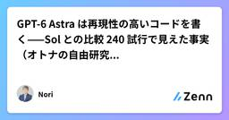
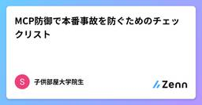
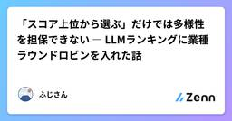
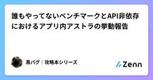
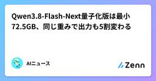

Zennの「大規模言語モデル」のフィード
フィード

AIが問いを立て直した ── 音声のズレを追って感じたLLMの進化
Zennの「大規模言語モデル」のフィード
目の前の症状から、データの生成経路へ。調査範囲が広がっていった!この記事の要点波形と音声が約0.5秒ずれる問題を、Codex上のGPT-6 Astraと調査したAIは調査の途中で「同期させる対象そのものが正しいのか」と問いを立て直した別リポジトリの変換処理をビルドして再現し、保存済み波形と全振幅値が一致した半年前に書いた「問いを立てるのは人間」という見方を、自分の経験から更新する 半年前に書いた「AIの視座」の、その後今年3月、「AIは問題を解くが、問いを立てない ── ３つのバグ修正で見えた『視座』の重要性」という記事を書いた。https://zenn.de...
7時間前

要件定義書をLLMと一緒に書いてみて、うまくいったこと・ダメだったこと
Zennの「大規模言語モデル」のフィード
要件定義書の下書きをLLMに書かせてみたら、思ったより使える部分と、まったく使えない部分がはっきり分かれました。この記事では、実際に試して分かったことを、良かった点も悪かった点も含めて書いていきます。 きっかけ要件定義書は、プロジェクトのたびにゼロから書き起こすには重い作業です。過去の案件のフォーマットを流用しつつ、今回の要件に合わせて書き直す作業に、毎回まとまった時間を取られていました。そこで、ヒアリングメモやSlackでのやり取りをLLMに渡して、要件定義書の初稿を生成させてみることにしました。ツールはClaudeを使っています。 うまくいったこと一番効果があったのは、...
7時間前

AI向けの目次を置いて14日ログを取ったら、148回取られてトップ以外は誰も読まなかった
Zennの「大規模言語モデル」のフィード
※メニュー（llms.txt）は熱心に読むのに、目の前のテーブルは空のまま。奥の料理も手つかず。時計は15:00です美容系勤務独学初心者マリー・アントワネット系エンジニア目指してます！今回は AIが読んでくれるか分からない なら 2週間ログを取ればいいじゃない 👸🍰です。読了時間の目安：約 8〜10分!3行まとめAI向けの目次 llms.txt を置いて 14日間アクセスログを取った148回取得された。でも目次が案内している先は、トップページ以外どこも読まれなかったしかも 私の測定に交絡があり、133回は「llms.txtだから」ではなかった📌 この記事...
8時間前

Claude Code で一番高いリクエストは「さっきの続きやって」かもしれない
Zennの「大規模言語モデル」のフィード
Claude Code のプロンプトキャッシュが話題に出ていたので、公式ドキュメントを読んで整理しました。先に結論から書きます。長時間放置したセッションに戻ると、再開の 1 ターン目だけが突出して高い高いのは「トークンをたくさん使うから」ではない。同じトークンに乗る単価が変わるからFable 5.1 だと、キャッシュが生きているときと切れた直後で単価が 80 倍違うただし 2 ターン目からは元に戻る。ペナルティは 1 回きりサブスクなら 1 時間、API キー / Bedrock なら 5 分。Subagent はサブスクでも 5 分サブスクでも、プランの上限を超えてク...
8時間前

OpenAI API 入門 — API キーの取得から初回リクエストまで
Zennの「大規模言語モデル」のフィード
OpenAI API 入門 — API キーの取得から初回リクエストまで 概要本記事は、OpenAI API を初めて触るエンジニア向けのハンズオンです。アカウント作成から API キーの発行、環境構築、そして初回リクエストの送信までを、最短経路で一通り体験します。手元にターミナルと任意のエディタがあれば読み進められます。対象は「Web の管理画面は見たことがあるが、コードから LLM を叩いたことはない」という段階の方です。 環境OS: macOS / Linux / Windows いずれかPython 3.8 以上（本記事は Python で進めます。Node...
8時間前

GPT-6 Astra は再現性の高いコードを書く——Sol との比較 240 試行で見えた事実（オトナの自由研究 #38）
Zennの「大規模言語モデル」のフィード
2つの発見1. GPT-6 Astra は再現性の高いコードを書く——品質スコアは 120 試行すべてタスクごとに同じ値2. 今回の GPT-6 Astra は low・medium の推論用トークンが少ない——楽観ロックでは low の全 10 試行で記録上ゼロ同じ Codex CLI・同じ 3 タスクで、GPT-6 Astra と GPT-5.6 Sol を 4 effort level × 3 タスク × 10 trial = 240 試行で比較しました。 はじめにGPT-5.6 が出てからわずか 56日で、また新たなモデル GPT-6 Astra が登場しま...
9時間前

【今さら聞けない】MCPを周回遅れで学び直す〜AWSでの活用とAIエージェントの共通規格〜
Zennの「大規模言語モデル」のフィード
はじめに最近、会社の後輩がMCP（Model Context Protocol）を使ってデータを取得し、AIエージェントに受け渡すシステムを開発していました。今後自分も同じようなAIエージェント構築やデータ連携の案件に関わる可能性が高まってきたため、「今のうちにちゃんと理解しておかないとマズい…」と焦りを覚えたのが今回のきっかけです。当時の私のMCPに対する知識レベルといえば、以下のようなかなりふわっとしたものでした。「LLMと外部データを繋ぐ共通のプロトコル（お作法）でしょ？」「これを挟めば色んなAIで同じデータが使えるようになるやつだよね？」大まかな概念としては合...
10時間前

MCP防御で本番事故を防ぐためのチェックリスト
Zennの「大規模言語モデル」のフィード
2026-08-11の技術トレンドはこれで掴める：LLM性能競争は終わり、MCP防御と業務エージェント実装が主戦場です この記事で分かること2026-08-11時点で、AI/LLMの重心が「高性能モデル」から「業務特化・エージェント運用・安全性統制」に移った理由MCPやツール実行まわりで、開発者が今すぐ見直すべきセキュリティ観点uv・Ruffを中心に、Python開発基盤をどう近代化すべきかの判断軸 AI/LLMのトレンドを正しく読む方法結論からいうと、今日のAI/LLMトレンドは「モデル性能」より「業務で成果を出すための実装」に完全に寄っています。なぜこれが重...
12時間前

生成AIに送ったデータはどこへ行く？Amazon Bedrockのセキュリティを整理する
Zennの「大規模言語モデル」のフィード
はじめに前回の記事では、Amazon BedrockをCLIから呼び出し、生成AIを手軽に試す方法を紹介しました。今回は少し視点を変えて、「Bedrockに送ったデータは、実際にどこで処理されるのか？」 という点を整理します。生成AIを業務で利用する場合、精度やコストだけでなく、入力したデータがどこへ送られるのか、モデルの学習に使われないかといった点も重要です。Amazon Bedrockでは、外部のLLMサービスを直接利用する場合とは、データの扱われ方や管理主体が異なります。この記事では、その違いをできるだけシンプルに整理します。 1. 生成AIを業務利用するときに気...
12時間前

「スコア上位から選ぶ」だけでは多様性を担保できない ― LLMランキングに業種ラウンドロビンを入れた話
Zennの「大規模言語モデル」のフィード
M&Aの検討がどのフェーズにあるかで、候補リストに求められるものは変わります。とくに初期段階では、売手企業の側にまだ買手像が定まっていないことが多いです。「この業種に譲渡すればこういうシナジーが生まれるのか」「この規模の相手だとこういうメリットがあるのか」「カルチャーが違う相手だとどうなるのか」——そうした像を具体的に思い浮かべてもらうことが、まずは必要になります。ですので、M&A初期の段階では、多様性が重要と考えています。本記事では、「業種ラウンドロビン選抜」の設計と実装を紹介し、候補リストにどう多様性を持たせるかについて書きます。 TL;DR初期のKEPLは...
13時間前

ファインチューニングとRAGの使い分け：どちらで解くべき問題かを初心者向けに整理する
Zennの「大規模言語モデル」のフィード
「社内の資料をAIに答えさせたい」「うちの言い回しに合わせたい」——生成AIを仕事に入れようとすると、だいたいこの2つの要望が同時に出てきます。そこで並ぶ候補が RAG と ファインチューニング です。どちらも「AIを自分向けに強くする」話なのに、やっていることはまったく違います。この記事は、コードをほとんど書かずに「どっちの道具で解く問題か」を見分けるための地図です。 一言で言うと、何が違うのか比喩で先に結論を置きます。RAGファインチューニング比喩司書に本を探させてから答えさせる社員に専門研修を受けさせる何を変えるか答えの材料（その場で渡す資...
13時間前

誰もやってないベンチマークとAPI非依存におけるアプリ内アストラの挙動報告
Zennの「大規模言語モデル」のフィード
こんにちは、黒パグです🐾新しいモデルが来ると、私はだいたい同じことをやります。まず名乗ってもらう。質問の文字を少し壊す。知らないことを聞く。そして、いつもの無茶振りを投げる。幼稚園児にわかる極座標ラプラシアンの導出 Python使用可今回は正直、ビビりました。私の黒パグベンチマークでは、これまでで最も高く評価した回答です。ただ、その評価に至るまでの操作記録を読むと、回答の出来だけでは片付かないものも出てきます。自己紹介の揺れ、試験への言及、見えなくなった使用量、検証ツールの起動失敗。今日はそのあたりまで、アプリから見えた範囲で報告します。タイトルの「誰もやってない」は、この妙な...
13時間前

通常のファインチューニングとLoRAでGPUメモリ消費を比較検証
Zennの「大規模言語モデル」のフィード
はじめに指示ファインチューニングにおいて、通常のフルファインチューニング（Full-FT）とLoRAとでGPUリソースの必要量にどれくらい差が出るかを比較検証しました。題材はカジュアルな日本語文からフォーマルな日本語文への変換（片方向）です。今回使用したプログラムはGitHub（ohban730/Finetuning-trial-002）で公開しています。 検証環境・ベースモデルベースモデル: rinna/japanese-gpt2-medium（GPT-2アーキテクチャ、パラメータ数約3.36億、日本語ネイティブトークナイザー）Python 3.10 / PyTorc...
14時間前

LLMを呼ばないための実装に時間を使ったら、変動費が9割減った
Zennの「大規模言語モデル」のフィード
個人開発で、中古市場に出品された万年筆のタイトルから「これはどのモデルか」を判定するパイプラインを作っています。最初は素朴に、全件をLLMに投げていました。動きはします。ただ、10万件処理すると約10万円かかる試算になりました。個人開発の変動費としては現実的ではありません。そこで「LLMを呼ばないための実装」に時間を使うことにしました。結果として、実測でLLM呼び出しを大幅に減らせています。この記事は、その過程で測って初めて分かったことの記録です。うまくいった話より、思い違いが露呈した話の方が長くなりました。 何を判定しているか入力は、こういう実際の出品タイトルです。PLAT...
16時間前

【Google】Gemini 3.8 Flash & Cyber登場！特徴とAPI活用法
Zennの「大規模言語モデル」のフィード
Googleから軽量かつ高速なAIモデルの最新版となる**「Gemini 3.8 Flash」および、サイバーセキュリティ領域に特化した「Gemini 3.8 Flash Cyber」**が発表されました。開発現場でのAI活用が進む中、特にレスポンス速度・運用コスト・実用的な処理能力のバランスに優れた Flash シリーズの進化は、日本の多くのエンジニアにとっても見逃せないトピックです。この記事では、今回発表されたモデルの概要・背景と、実際にAPIを使ってコードのセキュリティ診断を行う具体的な実用例を紹介します。 概要と注目されている背景 なぜ今「Gemini 3.8 Fl...
16時間前

AI彼女アプリを作っていて気付いた。気持ちと約束と記憶は、同じ速さでは残らなかった
Zennの「大規模言語モデル」のフィード
AI彼女アプリを作っていて気付いた。気持ちと約束と記憶は、同じ速さでは残らなかった以前、「同じ人」は、設定だけでは続かなかった。そんな話を書いた。設定だけではなく、昨日までの経験から作られた現在が、今日へ持ち越されていく。その積み重ねがあるから、昨日と今日が、同じ相手の時間として、つながって見えるのかもしれない。でも、その仕組みを作り続けていると、また別のことが気になってきた。昨日から今日へ、何かが残る。では、残ったものは、全部同じように時間の中を進むのだろうか。実際には、そうではなかった。昨日の悲しさ。来週の約束。昔から好き...
17時間前

Qwen3.8-Flash-Next量子化版は最小72.5GB、同じ重みで出力も5割変わる
Zennの「大規模言語モデル」のフィード
オープンウェイトの大型MoEモデルが相次いで量子化版GGUFを公開した週です。量子化しても容量は100GB前後から下がらず、同じ重みでも推論の実装次第で出力が変わることも分かってきました。この記事では、2026年8月25〜27日に公開されたQwen3.8-Flash-Next、GLM-5.3-Flashの量子化版と、推論バックエンドの違いで出力が最大5割食い違うという検証をまとめます。https://youtu.be/AlQpO0AS3ok 8月25日から27日に何が公開されたかこの期間に出た新モデルは3本ですが、そのままローカルマシンに載るものはありません。8月25日にApp...
17時間前

なぜフロンティアモデルのクラウドLLMは弱くなるのか ─ 『最初はよかったのに』を分解する
Zennの「大規模言語モデル」のフィード
はじめに「Claude Codeで使っていたモデルは最初はよかったが、最近はいまいちになった」と感じることがある。代わりに、クラウドで提供されるフロンティアLLMについて、この感覚を生む仮説を 確認できる事実、あり得るが外部からは確定できないこと、誤解されがちなこと に分ける。結論を先に言えば、同じ「モデル名」でも、実際に回答へ効く要素は重なっている。!本稿の結論「利用者が増えたから、同じ重みのモデルそのものが弱くなった」と示す公開証拠はない。一方で、利用上限による別モデルへの切替、モデル／システムプロンプト／安全策の更新、長く汚れた会話コンテキスト、要約・RAG・ツールの...
17時間前

LangChain.js × Gemini × MCP の Schema Error を回避する方法（@langchain/google版）
Zennの「大規模言語モデル」のフィード
TL;DRもし Gemini + LangChain.js (@langchain/google) + MCP で 「InvalidInputError: Gemini does not support ...」や「RequestError: Invalid JSON payload received」が出てお困りの場合、このパッケージで差し替えるだけで解決します！まず、このライブラリを入れてみてください：npm i @h1deya/langchain-google-exそしてインポートを差し替えて、クラス名を ChatGoogleEx で置き...
17時間前
【備忘録】初めてスマホアプリを構築・ビルドしてみた
Zennの「大規模言語モデル」のフィード
使った技術 - 箇条書きフロントエンド: Flutter Dart Androidバックエンド: Python FastAPI Uvicorn Pydantic REST API / JSONLLM: Google Gemini API google-genai Structured Output Ollama Qwen3インフラ・ツール: Render Android Emulator adb Git はじめにこんにちは。久しぶりの投稿になります。まず初めに、なぜスマホアプリを作ろうと思ったのかについて書いておきます。先日ハッカソン的なものに参加してスマホアプリをビ...
1日前